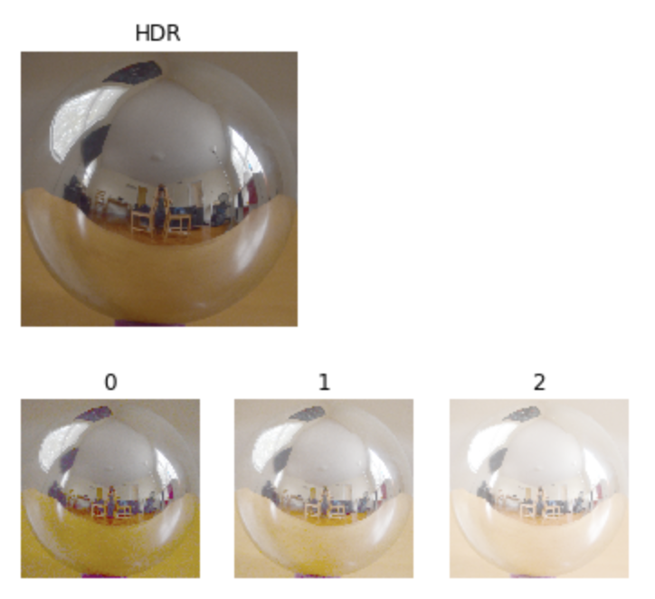
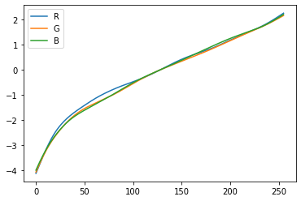

The Naive approach for LDR merging simply scales all LDR images as if they were exposed for the same amount of time and then averages these images into one HDR image. The log irradiance should become more similar with better methods of estimation, since they are trying to represent objective reality.
The filtered approach to LDR merging uses the same method as the naive approach but gives more weight to the middle intensity values.
The estimation approach to LDR merging solves for the response function of the camera in order to get a better estimate of the actual irradiance of pixels.
In order to use a mirror ball HDR image for image based lighting we need to change its shape. Blender reads in an equirectangular image for its environment texture, so we need to remap the circle mirror ball image to be a rectangle. To do this we assign coordinates to the circle mirror ball image and then remap them to a rectangular image.
The following response function was recovered with lamda=75.
Aligning images correctly in Blender so that they matched the perspective of the photo was very difficult. I think the dragon looks alright, but the statue does not match up quite right.